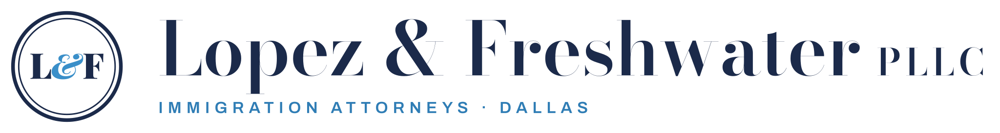
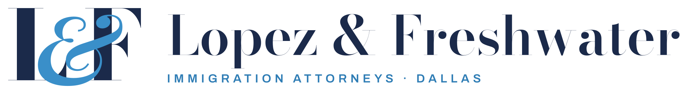
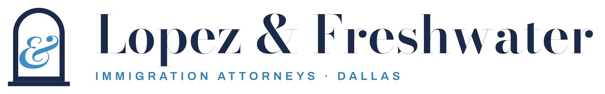
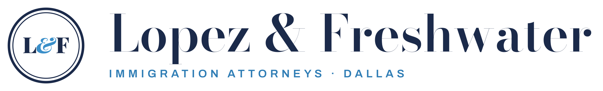

Lopez & Freshwater, PLLC: logo options
Draft for review. Nothing here changes the live mockup. Each option links to the real homepage with that logo in the header and footer. Current live mockup
A: L&F monogram
High-contrast Bodoni L and F joined by their blue italic ampersand.



B: Open doorway
An arched doorway with the blue ampersand standing in the light.


C: Seal (chosen, refined)
Refined double-ring seal: balanced rings, finer Bodoni L and F with their blue italic &, clear space all round.

